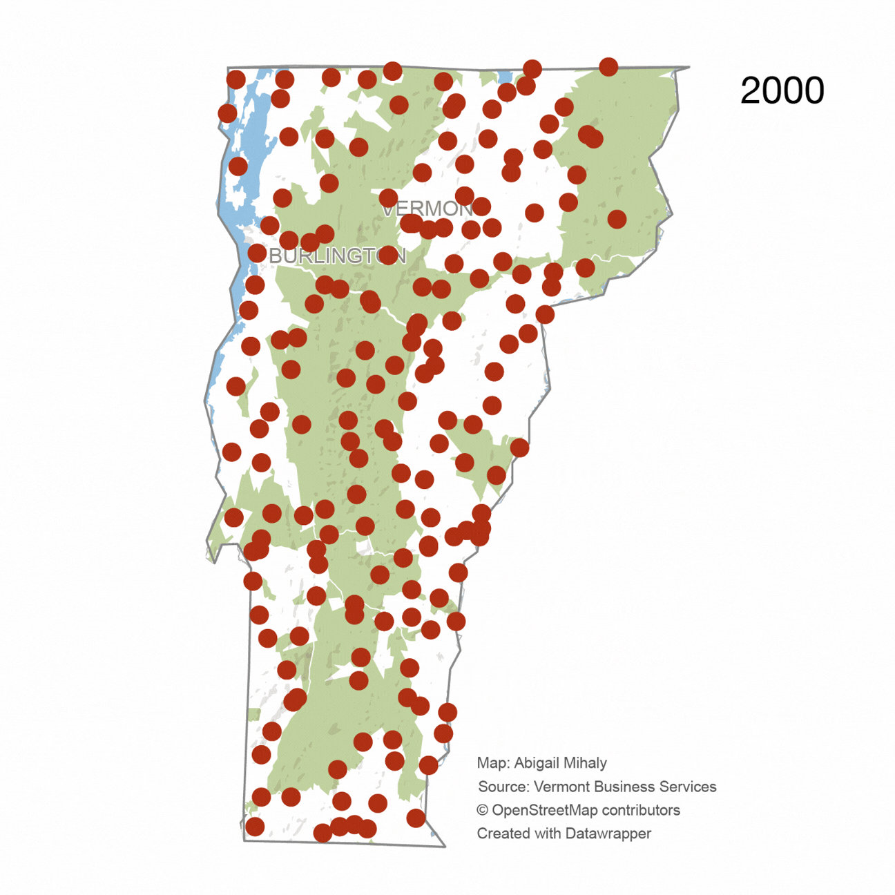
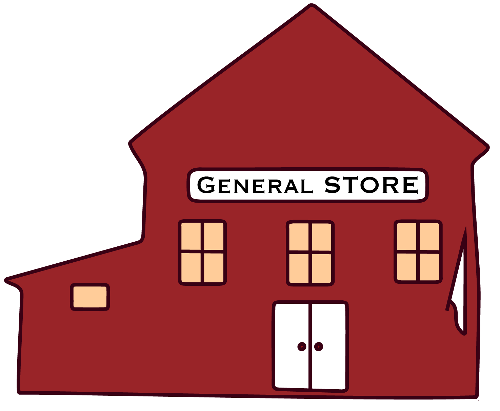

Lost Gathering Places
How small-town Vermont is losing its general stores.
How small-town Vermont is losing its general stores.

Vermont is made up of hundreds of small towns, often a few thousand people or less. My parents' village of East Calais boasts a Post Office, a church, and a General Store — that’s it. Everything else in “downtown” — the intersection of Route 14 and Moscow Woods Road — is residential.
In a town that small, one type of store won’t do. People need somewhere to buy both a cup of coffee and bugspray.
Enter, the General Store. General Stores are bigger than convenience stores, or corner stores. They’re one part grocery store, one part cafe, one part hardware store.
One such store, Dan and Whit’s in Norwich, Vermont, boasts the motto “If we don’t have it, you don’t need it.”

These stores also provide pride of place. Ben Doyle runs Vermont’s Historic Preservation Trust, which funds community projects, including helping struggling town stores. “I’m amazed at how many times we work with a general store where [the owners] will say, well you know, ‘this is the oldest general store in the state of Vermont,’” Doyle said, chuckling about different “qualifiers” they’ll use, like “this building is older,” or “this is the longest continuaously operat[ing]” store.”
That so many claim the “oldest” title, Doyle says, shows how these stores are rooted in Vermont communities. It’s about “pride of place,” he added. They’re places that breed “accidental encounters” that in turn build local community.
But the retail landscape is changing.
Chain stores from Walmart to Hannaford to Dollar General are have popped up across the state, offering cheaper prices than general stores can manage. Distributors supplying those big box stores won’t sell to companies as small as a general store, Doyle says. In one expression of that challenge, operators sometimes drive to Hannaford and other chain retailers to buy groceries to bring back and sell at their own stores he explains.
With margins slim, general stores are also often saddled with deferred maintenance costs. Doyle says many young people may be less interested in staying in Vermont to run their family’s general store than past generations, requiring families to look for new ownership. But selling to a new owner triggers renovations to meet new health and safety and fire codes. That can sometimes be prohibitive.
I set out to determine how many general stores have operated in Vermont over time. I wanted to see: did those retail changes in the early aughts trigger a decline?
Vermont Business Services data clearly shows an increase in the number of stores filing paperwork closing their businesses. There are notably more reported closures between 2005 and 2014.
It's worth noting that many stores likely did not submit formal closure paperwork with the state, but assuming that the percent of stores filing their closure paperwork remains mostly consistent over time, this trend would hold
Meanwhile, fewer stores have opened in the last ten years than in prior decades.
The dataset I worked with for this project is too limited to draw publishable conclusion about this finding. Still, this analysis instead serves as a preliminary look at what these trends look like, with the potential for future reporting including data from other sources.
Looking at how many stores are active each year lays bare the trend that Doyle and others are seeing on the ground: since the early 2000s, Vermont's General Stores have steadily declined.
Here are the number of General Stores With Active Registration Since 1980